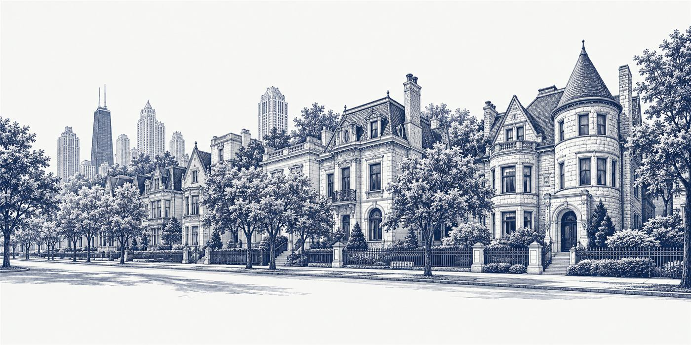
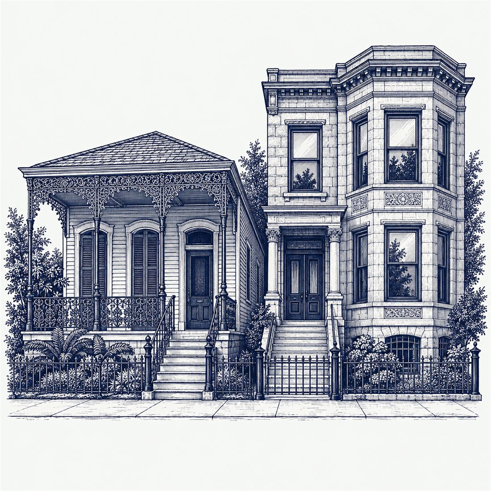

Board member, Gold Coast Neighbors Association
Chicago's Gold Coast
historic homes.
Help buying and selling Chicago’s older homes, from Astor Street greystones to Wicker Park two-flats.
If a house has original plaster, a slate roof or a landmark designation, Matthew knows what that means for the price, the inspection and the resale.
Chicago's only Historic Home Specialist (HHS) REALTOR®


Meet MatthewAbout Matthew
From New Orleans
to Chicago’s Gold Coast.
Matthew began in New Orleans, earning his Historic Home Specialist (HHS) designation through the Preservation Resource Center of New Orleans. He has sold homes on Chicago’s Gold Coast since 2018.
A board member of the Gold Coast Neighbors Association, he serves on its Marketing and History & Education committees. He has more than 17 years in residential and commercial real estate and a background in accounting. He also continues to serve buyers and sellers in New Orleans.
- HHS · Historic Home Specialist
- SRS · Seller Representative Specialist
- CID
- GREEN
Buying or selling
Why a historic home
needs a specialist.
- 01
Price the details
Look beyond square footage. Document original millwork, fireplaces, windows and restoration work, then compare condition and relevant sales before setting a price.
- 02
Understand the systems
Choose an inspector familiar with older buildings. Review masonry, moisture, roofs and mechanical systems, with specialist evaluations where needed, before planning your purchase and repairs.
- 03
Plan within landmark rules
Check the exact designation and protected features early. Account for city review in your renovation plan before settling materials, timing and budgets for the work.
Gold Coast
Chicago's Gold Coast
guide.
Astor Street: a Chicago Landmark
Designated in 1975, the Astor Street District brings nineteenth-century revival houses together with twentieth-century apartments and townhouses. Its architecture helps define the neighborhood’s character. City of Chicago ↗
A nationally recognized district
Chicago’s Gold Coast Historic District entered the National Register in 1978. Its recorded styles include Italianate, Queen Anne and Moderne. National Park Service ↗
Know the designation
Chicago landmark permit work affecting protected features requires city approval; in districts, these typically include exterior elevations visible from the public right-of-way. National Register listing is separate and does not automatically impose local landmark rules. Check a home’s designation before planning changes. City permit guidance ↗ National Register guidance ↗
Common questions
Questions about historic homes.
Can I renovate a house in the Astor Street landmark district?
Yes, but plan for review. In a landmark district, permit work on protected features, which usually means the outside walls you can see from the street, needs approval from the Commission on Chicago Landmarks. Check the address’s designation before you plan anything.
Is National Register listing the same as Chicago Landmark designation?
No. The National Register is a federal list. Being on it doesn’t put local landmark rules on a house by itself, and it generally doesn’t limit a private owner unless federal money or permits are involved. Chicago Landmark designation is the one with local rules.
How are historic homes appraised?
Like any home: comparable sales, location, size and condition. What helps an older home is paperwork, such as restoration records, permits and photos of original details. Character alone doesn’t raise the value; the comparable sales still decide it.
What should I inspect in a 100-year-old greystone?
Hire an inspector who knows older buildings. Look hard at the roof, the masonry and tuckpointing, the foundation and any water, then the electrical, plumbing and heating. Ask for permit and repair records, and get specialist follow-ups priced before you commit.
Contact
Thinking about buying or selling an older home?
Call or text Matthew. He’s happy to talk it through, even if you’re a year away.
Historic homes across Chicago, including Chicago's Gold Coast, Lincoln Park, Lakeview, Wicker Park, Bucktown, Logan Square and Old Town.